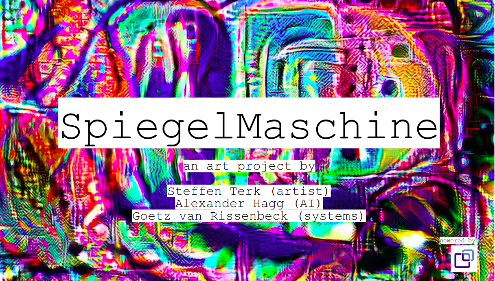
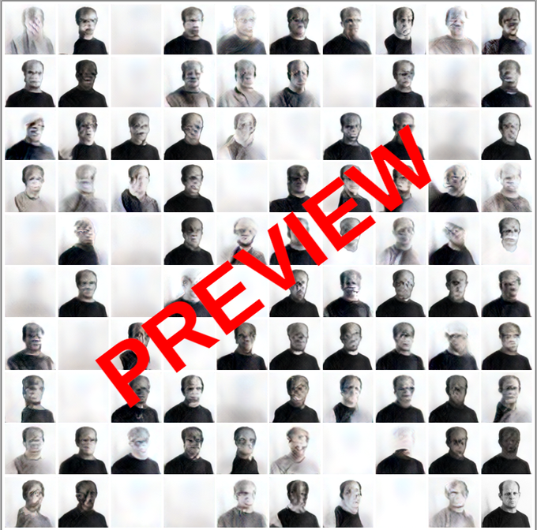
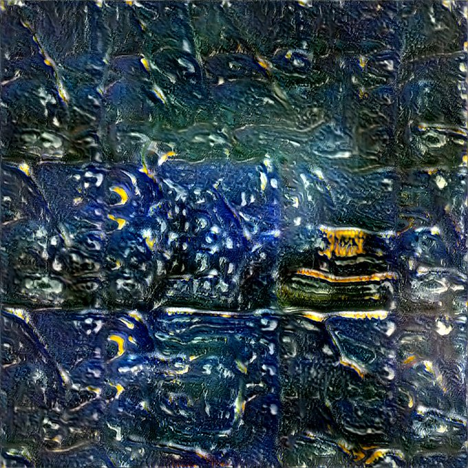
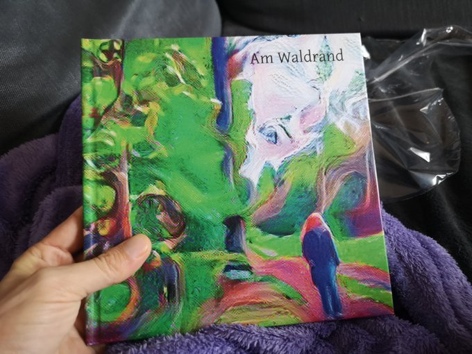
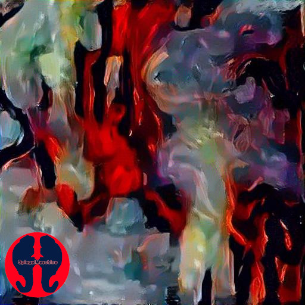
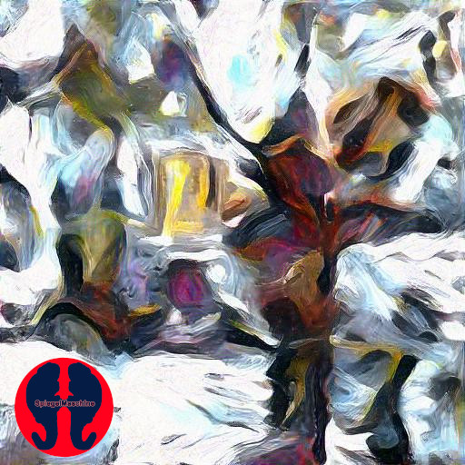
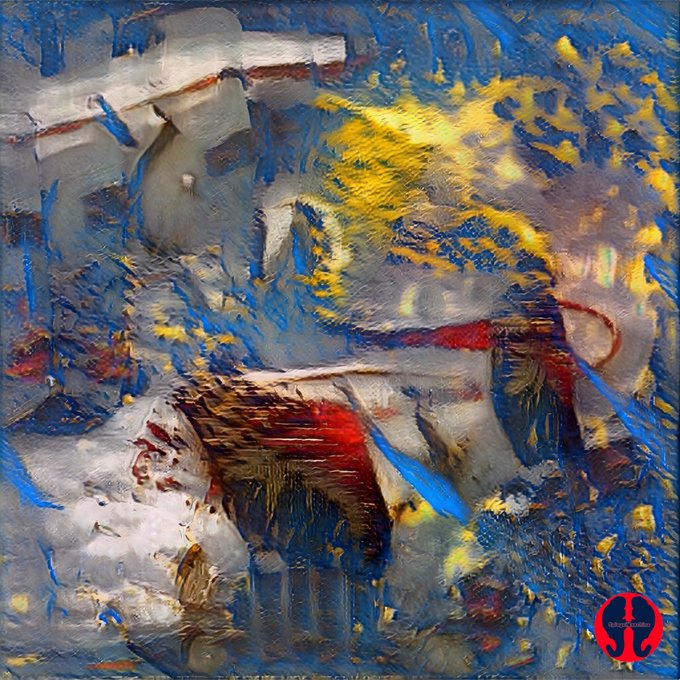
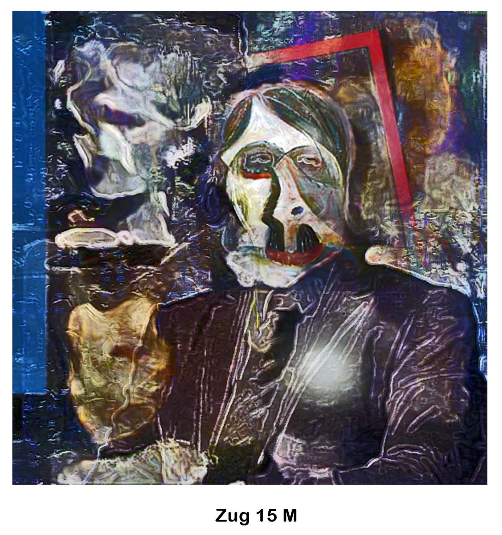

The Spiegelmaschine project aims to provide an interactive model between painter and machine. The Spiegelmaschine is trained on 1000 paintings by Steffen Terk.
An interface provides the ability to generate large numbers of random paintings that look like Steffen went into overdrive.
The Spiegelmaschine even has its own Twitter account, so be sure to follow the machine, if you are interested.






